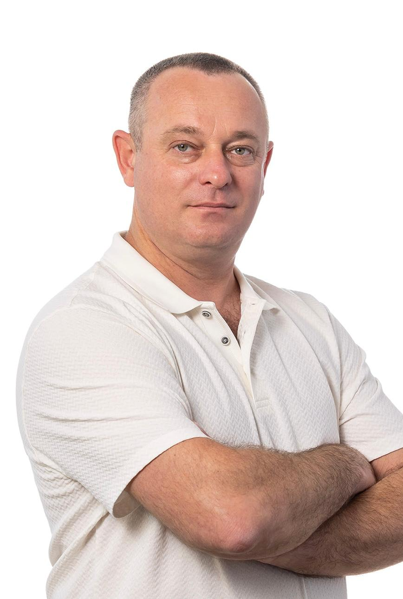

Max Pain
Open to principal · staff · tech-lead roles
Embedded Systems Tech Lead
From bare metal to working product.
Avionics, autonomous vehicles, medical devices, AR glasses — 25 years of first boots that stayed up. Today: a medical-device AR platform.
Principal engineer & architect · real-time, mission- and safety-critical platforms · multi-SoC bring-up · RTOS (QNX, GHS Integrity, VxWorks) · Linux / Yocto · C / C++ · ISO 26262 / FuSA

- Based
- Hadera, Israel · UTC+3
- Mode
- On-site · hybrid · remote
- Now
- Dual-SoC AR platform bring-up
- Engage
- Employee in Israel · EOR or contract abroad
- Reply
- Every serious enquiry, ~1 day
- Langs
- Hebrew · Russian · English
Every layer, bare metal to signed release
what I own · no hand-offsA product goes from a bare board to a signed release through eight layers. Most embedded roles own three of them and hand off at both ends — and hand-offs are where mission-critical programmes lose months. I own the whole column, including the build, CI/CD and release pipelines around it, so there is one person accountable for the whole path.
- Signed releaseimage signing · release pipeline
- Build & CIreproducible containers · toolchains
- Applicationservices · SDKs · tooling
- OS userspaceAndroid / Linux · HALs · SELinux
- Kernel & driversBSP · device tree · V4L2 · DMA
- FirmwareDSP · secure world · PMIC
- BootloaderUEFI · display & power init
- Silicon & boardmulti-SoC bring-up · PCIe · JTAG
What owning the top of the column means
Build & toolchain infrastructure
Modular multi-platform build frameworks, containerised reproducible builds, on-demand toolchains, artifact and third-party library ecosystems, layered device-tree and overlay build systems for per-variant hardware.
CI/CD & release engineering
Fully automated pipelines for embedded targets, signed release images, release profile and configuration management, deployment automation to real hardware, and the development and release processes around them — including inside a regulated medical-device environment.
Lifecycle & automation at scale
I have authored 40+ executable automation skills that codify a platform's entire bring-up and release lifecycle — flashing, image verification, overlay application, release configuration, wireless deployment, per-subsystem test sweeps, crash-dump capture. Tribal knowledge becomes a versioned, reviewable procedure that every engineer runs the same way.
Systems I have shipped
newest first · outcomes, with the stakes attachedSnke XR · medical-device AR glasses · current
Full-stack bring-up of a dual-SoC AR platform, boot to signed release
Two symmetric compute cores over a high-speed PCIe link, flashed and booted as one device. I own every layer: UEFI bootloader display and power init, DSP and secure-world firmware, signed peripheral images, Linux kernel and per-variant device-tree overlays, Android system and vendor userspace, and the signed release pipeline that produces the images — plus microdisplays, a multi-sensor camera array with hardware-triggered frame sync, the DSP sensor core, and the PMIC power and audio paths.
Vendor bring-up · video, streaming & rendering · current
Turned a lossy video pipeline into one that delivers all of it
Multi-sensor camera and display pipelines that dropped and silently lost frames now deliver every one of them. That work is vendor bring-up in the hardest sense — sensor and display drivers, hardware-triggered capture, the composition and handoff path, and low-latency streaming and rendering held stable under sustained load rather than in a quiet lab. Root-caused DMA misrouting and link-recovery faults across a dual-SoC boundary along the way.
General Motors · 2017 — 2024 · as Tech Lead, Platform & Infrastructure
A build framework that many GM organisations adopted
time to a developer’s first successful build · bars on a log₁₀ scale
I built a modular, multi-platform build and integration framework with on-demand toolchain downloads in place of monolithic SDPs and heavy emulators. It covers native Linux plus cross-compilation to ARM, QNX and multiple Yocto distributions, with the container images, workflows, testing, deployment and release pipelines defined around it — and it was taken up by many organisations across GM, spanning numerous software groups and projects. Setup time is not a vanity metric on a safety programme: it is how long a fix takes to reach a reproducible, auditable build.
General Motors · 2017 — 2024 · AV infrastructure
Brought up the compute unit an autonomous-driving programme was built on
Built the first central computer unit and its core infrastructure from scratch — the thing that made large-scale AV software development possible on the programme — and pioneered containerisation there with its first on-site Docker development environment. Delivered Safe Linux bring-up and containerised embedded solutions aligned with FuSA / ISO 26262 practice, then joined the core team behind GM Israel's first hands-free autonomous driving demonstration. At highway speed, a missed deadline is not a defect report.
General Motors · 2017 — 2024 · AI/ML enablement
Made machine-learning workloads run on automotive compute
Ported the Torch library to QNX and RedHat Linux and integrated CUDA into embedded compute for GPU acceleration, enabling early AV machine-learning development. Evaluated and integrated DDS (RTI) and Adaptive AUTOSAR into reliable IPC middleware for high-throughput robotics, and wrote a high-performance C++ Vehicle Data Records parser feeding ML pipelines and Elasticsearch analytics — all of it inside real-time and safety constraints that do not relax for a framework.
Munters · Team Leader & Principal Software Architect · 2011 — 2016
Built the company's embedded and IoT platform — and the teams behind it
Hired and led two embedded teams (infrastructure and algorithms), defined the company's core embedded and IoT software platform from scratch, and owned the full lifecycle from requirements and architecture through to production deployment — while staying hands-on in firmware, communication protocols, GUI engines and RTOS board bring-up.
BVR Systems / Elbit · Embedded Virtual Avionics · 2006 — 2011
Sole real-time engineer behind a virtual-avionics system now flying with air forces
EVA turns a basic or advanced trainer aircraft into a 5th-generation virtual fighter — virtual avionics, sensors and weapons, hybrid real/virtual scenarios simulating radar and EW, and fully synchronised replay for post-flight debrief. I owned every board bring-up, every OS integration and the cross-platform distributed real-time infrastructure underneath it. Installed in many of the world's leading trainer aircraft and operational with leading air forces.
The standard I hold
what mission-critical actually means“Embedded engineer” is a job title. This is the part that is actually hard, and it is what I am hired for.
Root cause, never the syndrome
No workarounds, no patches over symptoms, no “retry and hope”. A defect is not closed until the mechanism is understood and named. Every workaround left in a mission-critical system is a failure scheduled for a worse moment.
Concurrency is designed, not discovered in the field
Locking, lifetime and failure paths get the same scrutiny as the happy path, so deadlocks and hangs are found at design and test time rather than by the person holding the hardware. And when something does crash, it produces a symbolised dump that names the mechanism — diagnostics are how a defect gets closed properly, not an admission of defeat.
Reboot is not a recovery strategy
A device that needs a power cycle to become healthy is telling you the fault is still there. Recovery belongs in the boot path — cold-boot reliability is a design target with a test behind it, not a hope, and "power-cycle it" is never the fix I ship.
Every frame, every deadline
Dropped, late and vanished frames are bugs, not tuning parameters. I have taken video pipelines from intermittently losing frames to delivering all of them — and I hold latency and throughput under sustained load, not just in a quiet lab.
Measured, not assumed
Performance claims come with numbers and a method. Bring-up is unusable without honest telemetry, so I build the instrumentation first and treat “no data” as unknown — never as healthy.
What I am looking for
open to conversationsRoles
Tech lead, principal engineer, software architect or engineering management on real-time embedded mission-critical systems — defence and avionics, automotive functional safety, medical devices, robotics, space or XR.
The work I want is the hard part of the stack: bring-up, hard real-time behaviour, performance under load, and the architecture around it.
Practicalities
Based in Hadera, Haifa District, Israel (UTC+3). Open to on-site, hybrid and remote, and used to working across time zones after seven years inside a global organisation.
Available for full-time senior roles, and for scoped consulting on platform bring-up or build and release infrastructure. I reply to every serious enquiry, usually within a day.
Domains & environments
where failure is not an optionDefence & avionics
2001 — 2011 · BVR, Elbit, Mango DSP, Albatronics, Formtest
Mission computers, embedded virtual avionics, ground-based defence systems and automated test equipment for airborne platforms. Ten years on GHS Integrity and VxWorks — the certifiable real-time operating systems this industry builds on.
Automotive & autonomous
2016 — 2024 · General Motors, OSR Enterprises
Autonomous-driving compute platforms delivered under FuSA / ISO 26262 practice, Safe Linux bring-up, ADAS architecture and ASIL A–D working knowledge, AUTOSAR and DDS middleware, LiDAR integration.
Medical devices
2024 — today · Baxter Healthcare, Snke XR
Two regulated programmes back to back. At Baxter, embedded platform and release infrastructure inside an audited environment. Today, the AR glasses platform I bring up is itself a medical device — so the bring-up, the real-time behaviour and the release pipeline all carry medical-grade expectations.
Industrial & IoT
2011 — 2016 · Munters
Company-wide embedded and IoT platform built from scratch, control and management systems on ARM Cortex-M, and two engineering teams built around it.
XR & AR
current · Snke XR
Dual-SoC medical-device AR glasses, boot to signed release, with low-latency camera, display and sensor pipelines that have to hold every frame on a device worn on someone’s face while it is being relied on.
Leadership
2011 — today
Two teams built and led (~10 engineers), principal-level titles at Munters and Baxter, technical authority across domains, and mentoring on architecture, build systems and system integration.
Hiring for a system that cannot fail?
Twenty-five years of it, chronologically, with the technology behind every role — or skip the reading and email me directly.